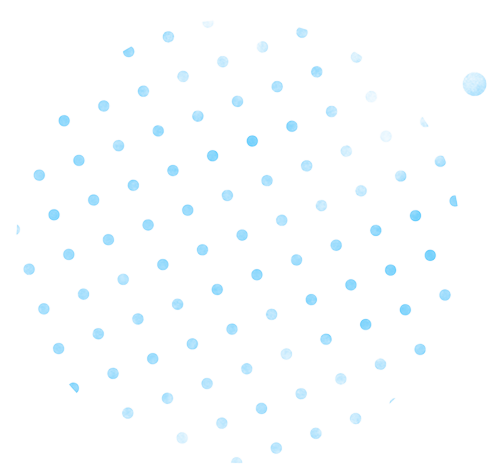

Hingga pengujung Desember 2022 kenaikan nilai saham BMRI lebih tinggi dibandingkan dengan Indeks Harga Saham Gabungan (IHSG) dan bank besar lainnya secara agregat.


Kinerja Bank Mandiri tahun 2022 cukup moncer. Solidnya pertumbuhan kinerja Bank Mandiri tersebut ditunjang oleh fungsi intermediasi bank yang optimal.
Kondisi perekenomian Indonesia yang kondusif juga mendukung performa Bank Mandiri. Sampai dengan triwulan III/2022, Indonesia membukukan pertumbuhan ekonomi yang positif sebesar 5,72% YoY.
Pertumbuhan ekonomi itu tercipta berkat kebijakan-kebijakan strategis pemerintah yang akomodatif, efektif, dan relevan dengan kebutuhan masyarakat. Aktivitas usaha masyarakat meningkat dan iklim investasi semakin inklusif dan bekualitas.
Kualitas Aset Terus Membaik (Kredit)
Non performing loan (NPL) secara bank only berhasil menurun sebesar 93 basis poin (bps) secara YoY ke level 1,88%.
Perseroan tetap meningkatkan rasio pencadangan atau NPL coverage ratio mencapai sebesar 311%.
Total restrukturisasi kredit terdampak Covid-19 (bank only) sebesar Rp 35,9 triliun. Jauh menurun dibanding kondisi akhir tahun 2021 yang mencapai Rp 69,7 triliun.
CKPN secara bank only sebesar Rp 10,3 triliun dengan rasio NPL coverage berada di level yang memadai.
Cost of credit (CoC) membaik dari 1,91% ke level 1,21%, terendah dalam beberapa tahun terakhir.
Secara pertumbuhan, dari sisi target sudah tercapai. Selain itu, dengan peran digitalisasi yang kami dorong terus mengakselerasi kinerja bisnis Bank Mandiri dan ke depan kami harapkan perbaikan ini dapat berlanjut di tahun 2023.
Darmawan Junaidi
Direktur Utama Bank Mandiri
Intermediasi Sehat
Tingkatkan Permodalan
Laba bersih Rp 41,2 triliun (tumbuh 46,9% YoY).
Kredit secara konsolidasi perseroan mampu tumbuh positif sebesar 14,48% YoY menjadi Rp 1.202,2 triliun.
Bank Mandiri optimis pertumbuhan kredit di tahun 2023 mampu tumbuh di kisaran 10-12% secara YoY.
Berkat pencapaian kredit yang impresif, total aset Bank Mandiri secara konsolidasi pun berhasil menyentuh Rp1.992,6 triliun (tumbuh 15,5% secara tahunan).
Pencapaian kredit Bank Mandiri tahun 2022 melampaui pertumbuhan kredit secara industri sebesar 11,35% di tahun 2022 lalu. Bila dirinci berdasarkan segmennya, kredit Bank Mandiri didominasi oleh:
- Penyaluran KUR
-
KUR Bank Mandiri di tahun 2022 yang berhasil memenuhi target pemerintah sebesar Rp 40 triliun kepada lebih dari 351 ribu pelaku usaha UMKM.
 Penyaluran KUR Bank Mandiri pun utamanya disalurkan ke sektor produksi sebanyak 59,73% atau senilai Rp23,9 triliun.
Penyaluran KUR Bank Mandiri pun utamanya disalurkan ke sektor produksi sebanyak 59,73% atau senilai Rp23,9 triliun. - Peningkatan Penyaluran KUR
-
Sektor pertanian menyumbang 29,53% dari total KUR Bank Mandiri atau senilai Rp 11,81 triliun.Sektor jasa produksi yang mencapai Rp 8,03 triliun di 2022 atau sekitar 20,07% dari total penyaluran KUR Bank Mandiri tahun 2022.
- Kredit UMKM
- Berhasil tumbuh 13,3% YoY dari Rp103,5 triliun di tahun 2021 menjadi Rp 117,2 triliun pada akhir tahun 2022.
Kinerja Saham
BMRI Menguat
BMRI Menguat
Performa bisnis dan keuangan yang tumbuh pesat turut membuat harga saham Bank Mandiri atau BMRI ikut melesat sepanjang tahun ini. Sempat menyentuh level All Time High sebesar Rp 10.900 per lembar saham pada 6 Desember 2022 lalu.
Hingga pengujung Desember 2022 kenaikan nilai saham BMRI lebih tinggi dibandingkan dengan Indeks Harga Saham Gabungan (IHSG) dan bank besar lainnya secara agregat.
Tercatat sepanjang tahun 2022 harga saham BMRI meningkat 41,3% secara year to date (ytd) hingga menyentuh harga penutupan saham tahun 2022 sebesar Rp 9.925 per lembar saham.
Kinerja Saham
BMRI Menguat
BMRI Menguat
Performa bisnis dan keuangan yang tumbuh pesat turut membuat harga saham Bank Mandiri atau BMRI ikut melesat sepanjang tahun ini. Sempat menyentuh level All Time High sebesar Rp 10.900 per lembar saham pada 6 Desember 2022 lalu.
Tercatat sepanjang tahun 2022 harga saham BMRI meningkat 41,3% secara year to date (ytd) hingga menyentuh harga penutupan saham tahun 2022 sebesar Rp 9.925 per lembar saham.
Kunci Peforma Saham BMRI
1
Strategi bisnis perseroan dalam menjaga pertumbuhan yang prima.
2
Posisi Return on Equity (ROE) bank only Tier-1 Bank Mandiri telah mampu menyentuh level 22,62%, meningkat signifikan mencapai 638 bps YoY di tahun 2022.
3
Selain itu, pendapatan bunga bersih (net interest income/NII) Bank Mandiri secara konsolidasi di tahun 2022 berhasil tumbuh 20,3% YoY menjadi Rp 87,9 triliun. Kenaikan ini pun ikut membawa rasio net interest margin (NIM) terjaga di level optimal 5,47%.
Darmawan Junaidi
Direktur Utama Bank Mandiri
Secara pertumbuhan, dari sisi target sudah tercapai. Selain itu, dengan peran digitalisasi yang kami dorong terus mengakselerasi kinerja bisnis Bank Mandiri dan ke depan kami harapkan perbaikan ini dapat berlanjut di tahun 2023